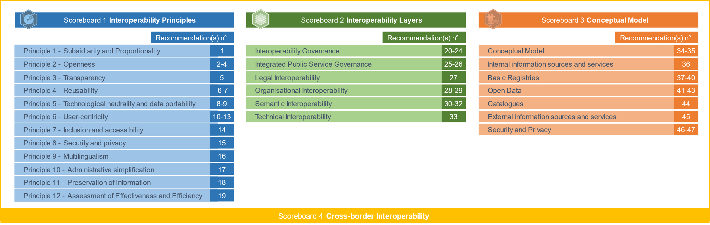

Digital Public Administration factsheet 2023
Latvia

 Table of Contents
Table of Contents1 Interoperability State-of-Play 4
2 Digital Public Administration Political Communications 8
3 Digital Public Administration Legislation 15
4 Digital Public Administration Infrastructure 23
5 Digital Public Administration Governance 31
6 Cross border Digital Public Administration Services for Citizens and Businesses 33

Interoperability State-of-Play
1
1
Interoperability State of Play
In 2017, the European Commission published the European Interoperability Framework (EIF) to give specific guidance on how to set up interoperable digital public services through a set of 47 recommendations divided in three pillars. The EIF Monitoring Mechanism (MM) was built on these pillars to evaluate the level of implementation of the framework within the Member States. Whereas during the previous, the MM relied upon three scoreboards, the 2022 edition includes an additional scoreboard on cross-border interoperability, assessing the level of implementation of 35 Recommendations. The mechanism is based on a set of 91 Key Performance Indicators (KPIs) clustered within the four scoreboards (Principles, Layers, Conceptual model and Cross-border interoperability), outlined below.

Source: European Interoperability Framework Monitoring Mechanism 2022
Each scoreboard breaks down the results into thematic areas (i.e. principles). The thematic areas are evaluated on a scale from one to four, where one means a lower level of implementation and four means a higher level of implementation. The graphs below show the result of the EIF MM data collection exercise for Latvia in 2022, comparing it with the EU average as well as the performance of the country in 2021.
Source: European Interoperability Framework Monitoring Mechanism 2022
The Latvian scores on Scoreboard 1 showcase an overall very good implementation of the 12 EIF Principles. Indeed, the country received the highest score of 4 on 10 out of 12 of the Principles, and scores above the EU average on the same 10 Principles. Nonetheless, potential areas of improvement for Latvia are related to Principle 3 (Transparency) and Principle 7 (Inclusion and Accessibility), for which the score of 3 could be further improved. More particularly, the country should continue to ensure internal visibility and provide external interfaces for European public services (Principle 3 – Recommendation 5) as well as continue to ensure that all European public services are accessible to all citizens, including persons with disabilities, the elderly and other disadvantaged groups (Principle 7 – Recommendation 14).
Source: European Interoperability Framework Monitoring Mechanism 2022
Latvia’s scores on Scoreboard 2 illustrate an overall very good performance on all interoperability layers as the country received the highest score of 4 on all layers, except for Interoperability governance. More precisely, potential areas of improvement for Latvia are related to the use of structured, transparent, objective and common approaches to assess and select standards and specifications (Interoperability governance – Recommendation 22) as well as to further consult relevant catalogues of standards, specifications and guidelines at national and at EU level, in accordance with the country’s NIF, when procuring and developing ICT solutions (Interoperability governance – Recommendation 23).
Source: European Interoperability Framework Monitoring Mechanism 2022
The Latvian results on the Conceptual Model (Scoreboard 3) show an upper-medium performance of the country. Although the country received the highest score on four areas of the Conceptual model, namely the model itself, Internal information sources and services, Base registries and Open Data, potential areas of improvement still persist. Most notably, with regard to the area od Security and Privacy, where the country received an overall score of 2. Latvia should further use trust services according to the Regulation on eID and Trust Services as mechanisms that ensure secure and protected data exchange in public services (Security and Privacy – Recommendation 47).
Source: European Interoperability Framework Monitoring Mechanism 2022
The results of Latvia on Scoreboard 4 on the Cross-Border Interoperability aspect show an overall good implementation by the country. Particularly, Latvia received the highest score on seven EIF Principles, four Interoperability layers and three areas of the Conceptual model. However, there are still some potential areas of improvement, most particularly with regard to the Security and Privacy aspect, where the country received a score of 2. Indeed, Latvia should continue to consider the specific security and privacy requirements and identify measures for the provision of each public service according to risk management plans (Recommendation 46) as well as to further use trust services according to the Regulation on eID, as mentioned before (Recommendation 47).
Additional information on Latvia’s results on the EIF Monitoring Mechanism is available online through interactive dashboards.
Curious about the state-of-play on digital public administrations in this country? Please find here some relevant indicators and resources on this topic: |

2
Digital Public Administration Political Communications
Berlin Declaration on Digital Society and Value-Based Digital Government
In December 2020, the Latvian government signed the Berlin Declaration on Digital Society and Value-Based Digital Government, thus re-affirming its commitment – together with other EU Member States – to foster digital transformation in order to allow citizens and businesses to harness the benefits and opportunities offered by modern digital technologies. The Declaration aims to contribute to a value-based digital transformation by addressing and strengthening digital participation and digital inclusion in European societies.
Digital Transformation Guidelines 2021–2027
The Digital Transformation Guidelines 2021–2027 entered into force in July 2021. The document continues the digitalisation policy set out in the ‘Information Society Development Strategy 2014–2020’. The new digital strategy defines priority axes for action, also for the digital transformation of the economy. The government platforms, processes and services are an integral part of the national digital infrastructure. In addition, data should become integrated assets to further stimulate the development of the digital economy, with open government digital platforms becoming catalysts in particular for the digitalisation of small and medium-sized enterprises (SMEs).
The guidelines indicate five lines of action and cover all key aspects of the digital societal breakthrough: (i) digital skills and education; (ii) digital security and credibility; (iii) access to telecommunications and services; (iv) digital transformation of the economy (including public administration); and (v) information communication technology innovation, and commercialisation industry and ICT science.
Report on a New Public Administration Services System Provision
In March 2021, a project for the conceptual report ‘A New Public Administration Services System Provision’ was submitted to the Cabinet of Ministers. On the basis of the report, the Latvian government is planning to establish 587 Unified Customer Service Centres in municipalities by 2023. The centres, located mostly in libraries in each parish, will allow citizens to access public administration services and contribute to public consultation activities in suitably equipped rooms, either with the assistance of trained employees or independently.
Public Service Development Plan 2020–2023
On 4 February 2020, the Cabinet of Ministers adopted the Public Service Development Plan 2020–2023 that strengthens personalised and innovative public administration services. The plan implements a number of fundamental changes in the provision of public services: promoting proactive instead of reactive service provision; user-oriented services according to the needs of citizens and businesses; an integrated approach in service design and provision; cross-border services instead of national oriented services; and, the provision of digital public administration services.
Conceptual Architecture of Public Administration Information Systems
On 10 March 2015, the Cabinet of Ministers approved the Conceptual Architecture of Public Administration Information Systems. The Conceptual Architecture is developed in accordance with the enterprise architecture modelling approach, covering processes (organisation), information (data), applications (systems) and technology (ICT infrastructure) aspects of public information systems. The Conceptual Architecture defines the long-term vision for the development of public administrations and public service infrastructures, and consists of 40 recommendations, including references to more particular reusable platforms, services and reference models. On 7 January 2018, the Cabinet of Ministers adopted an Informative Statement on Progress in the implementation of the Conceptual Architecture. In addition to the progress report, which describes the implementation of recommendations and particular shared platforms, it contains the National Interoperability Framework document as an Annex. The purpose of the informative statement is to better align the contents of the Conceptual Architecture with the European Interoperability Framework (EIF).
 Open Data, Reusability and Access to Public Information
Open Data, Reusability and Access to Public InformationFifth National Action Plan 2022-2025
On 10 February 2022, the Cabinet of Ministers approved the Fifth National Open Government Action Plan 2022-2025 to contribute to foster a global culture of open government within the Open Government Partnership. The plan sets out concrete steps across a broad range of issues and aims to facilitate open governance in order to take advantage of openness, accountability and public participation facilitated by digitalisation and innovation.
The plan creates a single framework for open governance initiatives in different sectors and policy areas in Latvia. The aim is to foster the openness and accountability of the government by increasing citizens’ participation and trust in the public administration.
To promote open governance in Latvia, the plan includes six commitments focused on promoting cooperation between public institutions and society, as well as facilitating the use of open data. The commitments include: improving openness of public procurements and contracts; opening datasets relevant to freedom of information; improving regulation on representation of interests and lobbying; facilitating open governance in municipalities; assuring effective public participation in reform processes and societal challenges; and anti-corruption measures.
The plan promotes the reuse of Latvia’s open government best practices by other Open Government Partnership countries and global partners.
National Open Data Strategy
On 20 August 2019, the Cabinet of Ministers adopted the National Open Data Strategy. In general, efforts are made to strengthen democracy and move towards an open society that wants to trust its institutions; the ambitions of the Latvian government are to introduce an expanded policy of openness and transparency in the State administration. This is a step towards promoting and developing a digital society and is one of the main objectives of a data-based society initiative.
The Latvian Open Data Strategy describes the situation of open data in Latvia at the beginning of 2019, explains the establishment of principles for the implementation of the Open Data Strategy, describes the benefits and challenges of publishing data, and the factors affecting international innovation in the field of open data. Finally, it sets out the goals for the implementation of Open Data Strategy principles and actions.
The strategy shall apply to public administrations, authorities under their responsibility and supervision, local authorities, as well as legal and natural persons of private law (hereinafter referred to collectively as ‘authorities’) to which the performance of public administration tasks has been delegated, to the extent of the delegation. In particular, the strategy covers all public administrations, including economic operators, associations and foundations, which perform public sector tasks on a public mission and directly relate to specific delegated public administration tasks.
One of the objectives of the strategy is to encourage Latvian national regulatory authorities to make the data at their disposal reusable, unless access is limited by national or international law or contracts, including data or information subject to restricted access or official secrets. In cases where the institutions' budget should provide for a fee for the dissemination of data, accessing the data may take longer time and has been practically difficult.
The strategy identifies specific tasks for national regulatory authorities for the following three years. In carrying out these tasks, Latvia will move towards a data-based society.
Electronic Identification Cards
Individual digital tools are available free of charge to all Latvian residents. In addition to the high and substantial assurance level of electronic identification means – including National eID card, mobile eID means and qualified electronic signature means – individual digital tools are complemented by the individual Registered Electronic Delivery – eAddress accounts.
On 15 October 2020, representatives from all three Baltic countries participated in the informal meeting for the Ministers for Telecommunications and Digital Policy. During the meeting, the Baltic countries presented their joint vision for the digital transformation of the EU, highlighting the role of a universally recognised eID solution as a key enabler to facilitate the development of the single digital market and for the provision of services in the public and private sectors.
 Security Aspects
Security Aspects Cybersecurity Strategy of Latvia
The objective of the cybersecurity policy for the period 2023-2026 is to strengthen the security of Latvian cyberspace by enhancing cyber-defence capabilities, increasing resilience to cyberattacks and raising public awareness of threats in cyberspace by defining the following priorities: defence, deterrence, and development.
The general policy of cybersecurity in Latvia is detailed in the Cybersecurity Strategy of Latvia 2023-2026, approved by the Cabinet of Ministers in March 2023. The Strategy sets out five main directions of action: (1) improvement of cyber security management, (2) promotion of cyber security and strengthening of resilience, (3) raising societal awareness, education and research, (4) international cooperation and the rule of law in cyberspace, (5) prevention and combating of cybercrime.
Modernisation of the Natural Persons Data Service
In 2018, the Office of Citizenship and Migration Affairs launched the Modernisation of the Natural Persons Data Service project (No. 2.2.1.1/17/I/006) of the European Regional Development Fund. The project has several objectives:
One of the activities of the project was the development of the Information System for the Register of Natural Persons, which was based on the Population Register extended to foreign nationals who enter into legal relations with the State. The Register of Natural Persons was developed and is available in production since 28 June 2021. It was developed in accordance with the provisions of the law on the Register of Natural Persons and has replaced the old system of the Population Register since 28 June 2021.
Integrated Electronic Procurement System
On 4 September 2012, the Cabinet of Ministers approved the Informative Statement on the need to develop an Integrated Electronic Procurement System (EPS).
The envisaged functionality of the EPS included the following elements: (i) development of the EPS platform (the portal), development of a common user registration and authentication solution based on the national information system integrator, integration of the existing eCatalogue system; (ii) use of the eCertificate subsystem to reduce the administrative burden on suppliers and shorten the time of actual procurement procedures; (iii) the eAuctions subsystem; and (iv) use of the eTenders subsystem to standardise the contracting processes and the documentation to be prepared for procurement, ensuring the availability of information.
No political communication has been adopted in this field to date.
National Artificial Intelligence Strategy
In April 2021, the Ministry of Environmental Protection and Regional Development of Latvia developed the National Artificial Intelligence (AI) Coordination Network, which will bring together stakeholders to work jointly in order to ensure the drafting of AI policies and the protection of national interests.
After signing the Declaration on Cooperation on AI in April 2018 to join forces and engage in a European approach to deal therewith, on 4 February 2021, the Cabinet of Ministers approved the informative statement ‘On the Development of Artificial Intelligence Solutions’. The aim of this document is to provide insights into AI technology, and the current situation with the use of AI solutions in Latvia and in the world, to describe growth potential and risks, raise awareness, and promote the deployment of AI technologies in both the State administration and the Latvian economy as a whole.
The informative statement ‘On the Development of Artificial Intelligence Solutions’ sets out a future national policy on the use of AI solutions and defines the way forward in promoting their use over the following three years. The informative statement entrusts ministries with identifying the areas in which AI can be exploited for the automation of public administration tasks. The report includes further actions:
Blockchain Informative Statement
Prepared on 16 June 2020, a new informative statement was approved by the Cabinet of Ministers to support the further development of a blockchain-based solution for eInvoicing and eReceipt processes performed by the State Revenue Services. The introduction of digital public services that reduce the bureaucratic burden on businesses and enhance the level of trust and transparency by limiting the amount of paper documentation are actions taken by the Ministry of the Economy under the overarching Zero Paper Economy (ZPE) initiative, supporting entrepreneurs and SMEs in particular. The ZPE facilitates the use and development of digital services for businesses and enhances the shift towards digital technologies. This initiative has helped shaping the digital agenda of the Ministry of the Economy and taking action towards processes that will raise the level of basic digital skills for employees, educating senior level management on modern technologies (AI, 5G, blockchain) and improving the level of digitalisation in SMEs and in the public sector.
No political communication has been adopted in this field to date.
 Cloud Computing
Cloud ComputingGovernment Cloud Policy Development
In 2018, the government cloud policy was adopted in the form of a government report. In 2021 that was followed by a government report on consolidation of government ICT resources and competences, defining a strategy for developing specialised shared services centres. The strategy includes few competence centres and developing government cloud services through the most suitable data centres owned by public administration. The concept is currently being developed further by the government report ‘Plan for the development of the Government data processing cloud’, that is due to be published in May 2023 and will be implemented with the financial support from the digital component of the Recovery and Resilience Facility plan for Latvia.
Declaration ‘Building the Next Generation Cloud for Businesses and the Public Sector in the EU’
In October 2020, the Latvian government signed the Declaration ‘Building the Next Generation Cloud for Businesses and the Public Sector in the EU’, therefore agreeing to work together with other signatory Member States towards deploying resilient and competitive cloud infrastructure and services across Europe.
No political communication has been adopted in this field to date.
European High Performance Computing Joint Undertaking - EuroCC
On 25 February 2021, Latvia participated in the projects of the European High Performance Computing Joint Undertaking (HPC). For Latvia, the EuroHPC project EuroCC is particularly relevant, as it aims to set up a network of national HPC competence centres in Europe, coordinating all national initiatives, facilitating access to European HPC competences and creating opportunities for Latvian institutions in different industries and areas.
Electronic Communications Sector Development Plan for 2021–2027
On 1 November 2021, Latvia approved the Electronic Communications Sector Development Plan for 2021–2027, which provides for measures for the development of very high-performance electronic broadband networks.
No political communication has been adopted in this field to date.

3
Digital Public Administration Legislation
Regulation for the Public Administration Services Portal
On 4 July 2017, the Cabinet of Ministers approved the Regulation for the Public Administration Services Portal (hereinafter – the portal), which governs public services and the implementation of the one-stop-shop principle. The regulation determines the manager of the portal, his/her duties and responsibilities, the duties and responsibilities of the institution, the procedure for the use and management of the portal, the procedure for the service catalogue and the information included therein.
This regulation prescribes:
Several regulations govern the procedures for updating information in the portal to improve the availability and use of eServices.
Registration, Quality Control and Procedures for the Provision of Public Administration Services
The three main regulations that govern eServices are:
Law on State Information Systems
New amendments to the Law on State Information Systems expanding the scope of the law and introducing the concept of opening government ICT platforms for commercial services providers were adopted by Parliament in June 2022.
Adopted in May 2002 and with amendments up to 2014, the Law on State Information Systems aims at ensuring the availability and quality of information services provided by State and local government institutions. The law determines unified procedures, by which State information systems are created, registered, operated, maintained, used and reorganised. It tasks the government with regulating the general requirements for information systems, including interoperability requirements, and defines the cooperation between State information system managers, including the reuse of shared services and components.
Freedom of Information Law
On 14 July 2020, the Cabinet of Ministers approved amendments to the Regulation of the Cabinet of Ministers No. 445 on the Procedures for Publishing Information on the Internet by Institutions. The regulation envisages the publication of open data at the public administration’s disposal in a machine-readable format jointly with metadata or dataset metadata, only in the Latvian Open Data Portal.
The Freedom of Information Law, amended on 12 June 2009, transposed the Directive on the re-use of public sector information (2003/98/EC) into national law. According to the amendment, an application for the re-use of existing information at the disposal of an institution shall be drawn up in writing, in accordance with the documentation requirements specified for the relevant information group. In addition, the application shall indicate that the information is requested for the purpose of re-use as well as the goods or services for which the requested information is necessary. The law also states that information re-use conditions shall not be imposed. Since 6 October 2015, new amendments to the Freedom of Information Law have entered into force. The amendments transpose Directive (EU) 2013/37 on the re-use of public sector information.
Open Data
On 21 December 2021, the Cabinet of Ministers approved an informative statement on the implementation of the ‘Open by Default Principle’. According to the statement, public sector institutions - who are the data owners mentioned in Annex one - have to open their respective data and publish them on the Open Data Portal. Additionally, the Ministry of Environmental Protection and Regional Development, in partnership with other public sector institutions, has to publish and update a list of datasets that would be suitable for opening in the future.
Accessibility of the Websites and Mobile Applications
The Regulation of the Cabinet of Ministers No. 445 on the Procedures for Publishing Information on the Internet by Institutions, amended on 14 July 2020, transposes the Directive (EU) 2016/2102 of the European Parliament and of the Council of 26 October 2016 on the accessibility of the websites and mobile applications of public sector bodies. Information and digital services become more accessible to users, in particular for persons with disabilities and the elderly.
 eID and Trust Services
eID and Trust ServicesPersonal Identification Documents Law
Starting from 1 January 2023, the electronic identification cards (eID) is a mandatory identity document for Latvian citizens and non-citizens who have reached the age of 15 years, according to the amendments made to the Personal Identification Documents Law on 9 May 2019. With an identity card (eID):
Natural Person Electronic Identification Law
In 2021, the Ministry of Environmental Protection and Regional Development made amendments to the Law on Electronic Identification of Natural Persons that further strengthen the role of the State-provided eID means in the public and private sectors. According to the amendments:
eIDAS Review
At the beginning of 2021, the European Commission in partnership with the Member States began their work on the review of the eIDAS Regulation. In June 2021, the European Commission published the initial proposal that introduced the concept of the Digital Identity Wallet and the European digital identity. In order to ensure the timely implementation of the Digital Identity Wallet in 2021 the work on the legal text and on the technical architecture of the wallet started simultaneously.
Digital Transformation Guidelines for 2021–2027
On 7 July 2021, the Cabinet of Ministers approved the Digital Transformation Guidelines for 2021–2027. One of the action points in the document is ‘Digital security and trust’ (see 4.2.) that focuses on online security, trust services and electronic identification, etc. The guidelines emphasise that a high level of trust and accessible and modern electronic identifications means by default do not automatically facilitate the uptake of these solutions in society and highlights the need for more actions to facilitate the use of State-provided electronic identification means and trusted services as well as the need to further develop the national legislation in this field. The guidelines also indicate a goal for the number of national eID and trust service users, set at 500 000 by 2027.
Law on the Register of Natural Persons
The Law on the Register of Natural Persons will facilitate a unified way of registering foreign nationals who wish to receive public administration services in Latvia electronically, using the electronic identification issued by the Member State of the European Union, the State of the European Economic Area or the Swiss Confederation. The new Natural Persons Register has replaced the old Population Register and is operational as of 28 June 2021. The Law on the Register of Natural Persons has also entered into force on 28 June 2021.
Personal Data Processing Law
The Personal Data Processing Law came into force on 5 July 2018. The purpose of this Law is to create legal preconditions for the setup of a protection system for the personal data of a natural person at national level by providing for the institutions necessary for such purpose, determining the competence and basic principles of operation, as well as regulating the operations performed by data protection officers, and the provisions concerning data processing and free movement.
 Law on the Security of Information Technologies
Law on the Security of Information Technologies
The Law on the Security of Information Technologies entered into force on 1 February 2011. It aimed to improve the security of information technologies by defining the key requirements for organisations to guarantee the security of essential electronic services. The law provided for the identification and protection of critical infrastructure, the establishment and organisation of an IT Security Incident Response Institution (national CERT), the conduct in case of information technology security incidents, the setup of minimum security requirements for State and municipal institutions and the implementation of Directive (EC) 2009/140 by electronic communications service providers.
In 2022, adjustments to the law were drafted and approved at government level, including the change of its name to ‘National Cyber Security Law’. The adjustments are expected to be adopted by the Parliament during 2023.
Population Register Law
The purpose of the Population Register Law is to establish and maintain a single system for the registration and recording of natural persons, the Register of Natural Persons, in order to ensure the identification of natural persons and the processing of data which is performed by State institutions and officials.
Civil Registration Law
According to the Law On Registration of Civil Status Documents, the General Register Office is in charge of preparing, updating and renewing marriage, birth or death registry entries. A document confirming registration of a civil status document shall be issued on the basis of birth, marriage or death registry entries. Additional pieces of legislation are the Civil Law and the Regulations on Registers of Civil Status Documents and the Regulations on State Fees for the Registration of Acts of Civil Status.
The Civil Register does not provide any open data at the moment. However, other institutions can recover data from the registry via APIs. The Civil Register is connected to the Enterprise Register, the Social Information Systems, the Address Register and the Tax Register, among others.
Enterprise Register Act
The Enterprise Register Act and the Enterprise Register implement the registration of those entities as determined by law. This is done to establish their legal status and ensure the public reliability of information laid down in national laws and regulations (regarding the entities to be registered and the legal facts), as well as to ensure the accessibility of information provided by laws and regulations. An amendment to the law, announced in April 2017, established that the Enterprise Register should no longer be tied to any specific geographical location because it can be managed by any Enterprise Register branch. The amendment improved and simplified document circulation for the Enterprise Register and reduced the formalities for public users.
Additionally, legislation pertaining to the Enterprise Register can now be retrieved from the legal pages of the Enterprise Register website .
An amendment to the law, announced in November 2020, established that information on legal persons, including company officials, owners, beneficial owners, stored on 14 registers of the Register of Enterprises, will be publicly accessible online and free of charge on the Register’s information website. The public opening of the registers will result in the accessibility of up-to-date and historical information on over 650 000 legal persons (e.g. LLCs, JSCs, associations, etc.) and legal facts (e.g. commercial pledges, marriage contracts, etc.) from the commercial register, commercial pledge register, association and entity register and others (overall 14 registers and lists).
The register is also working on expanding the amount of information in open data format. Basic data on legal entities are already available in open data format. By the end of 2021, the Latvian government expanded the amount of information in the open data format, including information about true beneficiaries. The open data format is considered to be the most efficient way of processing and analysing information across borders.
Amendments made in 2021 improve the information system of the Enterprise Register by exchanging messages and documents with foreign registers through the system of registers’ interconnection, including various State information systems, commercial and company register.
Law on Vehicle Registration
The Law on Vehicle Registration states that the Vehicle Register contains the national inventory and ensures it is updated. State records include each vehicle, or the numerical identification records, technical data and information about its owner or holder. Additional pieces of legislation are:
The establishment of an eProcurement System and the transition to the electronic submission of applications and tenders in public procurement in Latvia was gradual. The Public Procurement Law, which was adopted on 15 December 2016 and entered into force on 1 March 2017, provided that the electronic submission of tenders would be mandatory. In accordance with the transitional provisions, this transition occurred in the period from 18 April 2017 to 1 April 2018, when the electronic submission of procurement procedures was successfully centralised. From 1 January 2019, the electronic submission of tenders has become mandatory for all public procurement submissions above EUR 10 000. Public-procurement procedure eCertificates were established to provide access to reliable information, regarding both public and private suppliers, by using connections to 123 databases or notifications from State and local government institutions, to improve the public procurement procedure.
The eProcurement System in Latvia was established with the aim to simplify procedures in order to reduce the administrative burden, facilitate the ability of entrepreneurs to participate in the public procurement process and increase competition. For society and institutions, the legal framework was improved to ensure better information on procurement procedures, facilitate them and promote their transparency.
The contracting authority must accept an electronic invoice that complies with the legislation on the applicable standards for electronic invoicing, and specification of use of its essential elements. If the public contract so provides, the invoice must include additional essential elements in accordance with the legislation. The Cabinet of Ministers determined the applicable standards for electronic invoicing, their essential elements and the dissemination procedures.
Law on Procurement for the Needs of Public Services Providers
The Law on Procurement for the Needs of Public Service Providers regulates the use of electronic communication means in the public procurement process for the utility sector. The above, concerning the establishment of eProcurement System and transition to the electronic submission of applications and tenders, also applies to procurement for the needs of public service providers. The Law on the Procurement for the Needs of Public Service Providers, which was adopted on 2 February 2017 and entered into force on 1 April 2017, provided that the electronic submission of tenders is mandatory. In accordance with the transitional provisions, this transition occurred in the period from 18 April 2017 to 1 October 2017, when the electronic submission of procurement procedures was successfully centralised. From 1 October 2017 the electronic submission of tenders has become mandatory for all public procurement procedures, which are carried out in accordance with the Law on Procurement for the Needs of Public Service Providers.
eInvoicing Legislation
The Regulation of the Cabinet of Ministers No. 154 on applicable standards for electronic invoices and the procedures for the use of the basic elements thereof of 9 April 2019 - issued in accordance with the Public Procurement Law, the Law on Procurement for the Needs of Public Service Providers and the Law on Public-Private Partnerships - determines the applicable standards for electronic invoices, the specifications concerning their basic elements and the procedures for submitting eInvoices. Economic operators in Latvia can submit their eInvoices to contracting authorities, public service providers, public partners or legal persons acting as public partners by means of: (i) an official electronic address (eAddress); (ii) an e-mail address, which is specified in the website of the contracting authority, public service provider, public partner or legal person acting as a public partner; or (iii) in another way as defined in the procurement contract or the public-private partnership contract.
eDemocracy Legislation
On 15 December 2015, the Cabinet of Ministers approved amendments to a Regulation of the Cabinet of Ministers that introduced the possibility of initiating official referenda on the dissolution of Parliament or initiating a bill by electronic means. From 1 March 2015, it has become possible to initiate a referendum by using other authentication means, including internet bank authentication (currently the most common means of digital identification).
Article 131 of the Rules of Procedure of the Saeima provides that “at least 10 000 citizens of Latvia, who shall have reached the age of 16 on the day of filing a submission, have a right to file a collective submission with the Saeima”. The collective submission might be presented electronically (“a collective submission that is filed electronically shall be supplemented with technical information confirming the signing of the collective submission and ensuring the possibility to verify the number of signatories, their names, surnames and ID numbers”). In this way, the social ePetition platform was deemed legally binding for Parliament.
Electronic Documents Law
The Electronic Documents Law (EDL) came into force on 1 January 2003. The Law transposed the EU Directive on a Community framework for electronic signatures (1999/93/EC), and defined the legal status of electronic documents and digital signatures. According to the law, electronic documents must be accepted by every public institution (State and municipal). In addition, citizens and businesses can request an electronic reply from the public administration. The amendments to the EDL were intended to ensure the widest possible use of secure electronic signatures. The legislation extended the use of secure electronic signatures, excluding previous limits on their use (such as a private business or expedited family law). At the same time, the EDL regulation applies where sectoral laws and regulations do not. Normative acts must comply with the EDL to be valid. This legislative act simplified the procedure for securing electronic signatures and clarified the information to be included in the qualified certificate.
Law on Information Society Services
The Law on Information Society Services, which transposes the EU Directive on certain legal aspects of information society services (2000/31/EC), with particular emphasis on electronic commerce, was approved by the Parliament on 4 November 2004. This law governs the procedure for the provision of electronic services, the conditions to be respected by eService providers, their responsibility, and the requirements for the protection of consumer rights.
Law on the Official Electronic Address
The Official Electronic Address Act came into force in March 2018 with the purpose of ensuring secure, efficient and high-quality electronic communications and electronic documents handling between public entities and private individuals. It stipulated that public institutions must use their official electronic address (eAddress) from 1 June 2018, when citizens could activate their own individual eAddress. According to the amendments made to the Law on the Official Electronic Address on 17 December 2019, the official eAddress started to be mandatory for businesses from 1 January 2023.
Latvia’s eAddress will allow citizens and businesses to correspond electronically with public authorities. The eAddress will be the national electronic mailbox for messages and communications under the responsibility of the Ministry of Environmental Protection and Regional Development and the State Regional Development Agency. As one of the digital communication initiatives in Latvia, the eAddress aims to ensure the transition to digital exchange for communications from all public entities to legal persons and individuals.
Amongst other things, a core task of this solution is to make it possible for authorities to deliver important information, possibly including sensitive data, securely and digitally to citizens and businesses.
Electronic Communications Law
The Electronic Communications Law entered into force on 1 December 2004. It promotes and regulates the provision of electronic communications services, transposing the EU regulatory framework for electronic communications. The law details various electronic networks, including public and private electronic networks. In addition, it stipulates the duties and rights of providers, subscribers and users of electronic networks.
No legislation has been adopted in this field to date.
No legislation has been adopted in this field to date.
No legislation has been adopted in this field to date.
National Federal Cloud
The final Proposal for a Council Implementing Decision on the approval of the assessment of the recovery and resilience plan for Latvia, includes Investment 2.1.2.2i. on the ‘National Federal Cloud of Latvia’. The investment is targeted at the establishment of a National Federal Cloud, providing for consolidation of public sector data storage and computing capabilities by means of a group of co-ordinated projects. The first development phase will result in the integration of four shared services providers into the National Federal Cloud, namely the Latvia Radio and Television centre, the National Library of Latvia, the Ministry of Interior Affairs Information Centre and the Ministry of Agriculture. Altogether, at least three national centralized public services delivery platforms and seven department and support functions platforms shall be integrated into the National Federal Cloud, i.e. they will use its computing services.
No legislation has been adopted in this field to date.
No legislation has been adopted in this field to date.
5G Coverage and Investment
The final Proposal for a Council Implementing Decision on the approval of the assessment of the recovery and resilience plan for Latvia includes Investment 2.4.1.1.i. on the ‘Construction of the Passive Infrastructure on the Via Baltica Corridor for 5G Coverage and Investment’. The goal of the investment is the deployment of a 5G corridor, in line with the 5G Action Plan for Europe, with an initial focus on Via Baltica as a pilot project to then develop other road sections in the future 2.4.1.2i. on ‘Broadband or very high-capacity network “last mile” infrastructure development’. The investment aims to create opportunities for regional development and stimulate the demand for new digital services.
No legislation has been adopted in this filed to date.

4
Digital Public Administration Infrastructure
State and Local Government Services Portal
The State and Local Government Services Portal provides citizens in Latvia and abroad with access to the online resources of Latvian State institutions, as well as with centralised access to eServices supplied by different institutions. It is the most visible part of a developed national shared services platform.
In March 2021, the portal offered 123 eServices, 812 external eServices and 4 474 public service descriptions. The information is organised according to a life event approach, covering in total 152 life events: life events bring together successive steps for the use of different eSolutions (ICT platforms, eTools and eServices) in one place. These eSolutions enable a person to successfully complete the formalities related to a particular life situation, such as changing residence, changing work, setting up a company and many other situations. The portal has three main functions: information, consultation and access to eProcedures, from basic eDocuments sent by e-mail to advanced, fully automated eServices.
The most popular eServices are: the E-application for State Social Insurance Agency (SIAA) services; the document check of the Invalid Documents Register; the application to an institution; the account statement for subscribers in these State-funded pension scheme (2nd pillar pension); and the payment of the immovable property tax.
There is a wide range of authentication tools available to access eServices in the State and local government services portal including eID cards, eSignature cards, eSignature Mobile, eIDAS (for cross-border authentication) as well as eight different iBanking authentication tools. The portal also provides the opportunity to carry out ePayment services.
 Unified Web Platform for Government and Local Governments
Unified Web Platform for Government and Local Governments
The Unified Web Platform for Government and Local Governments is an ongoing project whose purpose is creating a centralised platform for the management of public administration authorities’ websites. The project contributes at implementing the requirements of Directive 2016/2102 while ensuring efficient use of resources in the management of government and local authorities’ websites through a unified website content management system and centralised technical support and maintenance, as well as decentralised content formation and administration. The project is managed by the State Chancellery and is expected to be fully implemented by April 2023. In January 2023, the number of government and local governments websites on the platform is 106.
eHealth System
The Latvian government implemented an eHealth System which allows citizens to have access to current and historical medical data of patients, so long as patient information was entered in the eHealth system by medical professionals. The portal can contain hospitals certificates, information on diagnoses, allergies, medicines and medical devices. This way, doctors and pharmacists can quickly obtain reliable patient information. The system ensures that patients follow their treatment as prescribed by their physician. Healthcare institutions and pharmacies can access the system by using patient data information systems integrated within the eHealth system.
In the eHealth system, health professionals can: prescribe via ePrescription and give eSick leave certificates; view and add data in a patient’s file (diagnoses, allergies and administered drugs); create an eReferral for a specialist consultation or a diagnostic test; prepare medical documents during a consultation, examination or treatment; view medical documents prepared by other doctors; deny a patient the right to view certain medical data; and fill in the patient data in the register for specific diagnoses. Pharmacists can dispense the prescribed medicines, as well as make their own statistical reports. Patients can: access their medical information; grant or refuse access to their records; and apply for a new European Health Card.
Online Latvia
The Online Latvia website Latvia.eu is a starting point for becoming acquainted with Latvia. It provides background information and a variety of publications on current events occurring within the country. There is an extensive news section, ePresentations and videos about Latvia, as well as links to other Latvian governmental and private websites. Information is available in multiple languages.
National Open Data Portal
The Ministry of Environmental Protection and Regional Development (MEPRD) launched the Latvian Open Data Portal in 2017. This platform provides a single point of access to open government data. The portal currently features 615 datasets from 93 data publishers, but this is expected to grow over time, as more data publishers will gradually join the portal. Data publishers are responsible for the data published on the portal. The MEPRD offers methodological support to publishers by providing material that also forms part of the content available on the portal. The technical operation of the portal is carried out by the State Regional Development Agency.
In addition to providing Open Data, the portal offers other features such as a section on data skills, an overview of events as well as references to content developed by the European Data Portal, such as the video Explore Open Data. The Latvian Open Data Portal has been created using the open-source technology platform and open-source data catalogue of CKAN.
The new Latvian Open Data Portal is harvested by the European Data Portal, which means that all data published on the Latvian data portal are also available on the European Data Portal.
Platform to Develop Virtual Assistants for Public Administration Institutions
In 2018, the national public administration language technology platform Hugo.lv was launched using world-renowned AI-based machine translation systems, speech recognition tools and the National Term Database. The service provides automatic translation from Latvian into English and vice versa, as well as from Latvian into Russian to translate texts, documents, and websites enabling multilingualism in government eServices. The services provided through the platform are customised for the Latvian language and adapted specifically to public sector documents, providing much higher translation quality than generic online translation systems.
In 2019, the Centre for Culture Information Systems has launched an innovative shared platform to develop virtual assistants for public administration institutions based on the national public administration language technology platform. This approach makes it possible to significantly save resources, since institutions only need to adjust the virtual assistants to their specific needs instead of developing their own virtual assistant from scratch. The expected outcome of the project is to equip public administration institutions with a modern tool to provide more user-friendly communication and customer-oriented public services in a more cost-efficient, effective, and time-saving manner.
Single Portal for Development and Harmonisation of Drafts Legal Acts
The Single Portal for Development and Harmonisation of Draft legal Acts aims to modernise the process of legislative drafting by creating a single space for the storage of all information regarding the lifecycle of a draft legal act. The existence of a single platform also allows for greater participation of the public as citizens can find detailed information of all legal drafts on the same website. The TAP portal was launched in 2018 and has been developed by upgrading the e-portfolio system previously used by the public administration.
The Electronic Declaration System (EDS) is a safe and convenient way for private individuals and legal entities to submit all tax returns and information declarations, as well as requests addressed to the State Revenue Service (SRS). EDS provides various registration and authentication options, such as eID, SRS-issued usernames and passwords, and iBanking. EDS also provides authentication services for the de minimis aid accounting system and other system users. In addition to document submission, EDS provides online services such as access to various registries, a personalised document and payment timetable/reminder calendar, tax payments, reports, payroll tax booklets, and correspondence with the SRS. EDS allows citizens to access various taxpayer data, such as employment records and tax relief information. Additionally, a mobile app for submitting eligible expense documents and various types of reports is available to EDS users. The app is free, guarantees user privacy and saves time. EDS is available in English and Russian to taxpayers who do not understand Latvian and non-residents. As of 1 June 2014, all payroll tax booklets are available only electronically. Both employees and employers have access to payroll tax booklets and can make adjustments as needed. All paper-format payroll tax booklets issued before 1 June 2014 are no longer valid.
Trans European Services for Telematics between Administrations
Latvia uses the Trans European Services for Telematics between Administrations (TESTA) network as the main cross border infrastructure to communicate digitally among EU agencies, institutions, and Member States.
State Information System Integrator
The State Information System Integrator (in Latvian - Valsts Informācijas sistēmu savietotājs, VISS) is an integrated set of solutions developed for public institutions to exchange data between various information systems in a platform-independent standardised manner. It also gives access to different shared components for the development of eServices and provides support for the development of infrastructure needed to operate these eServices. Together with the State portal latvija.lv, this system forms a single national electronic service delivery platform.
The VISS portal provides access to the State Information System Integrator and the infrastructural resources of the latvija.lv public services portal needed for the development and operation of eServices, as well as the access to the public administration services catalogue.
Web-Based Document Flow System
The information system DAUKS was launched in 2007 to provide the possibility to exchange single documents and control the performance of the tasks assigned by the Cabinet of Ministers to public sector bodies. The objective of the system was to switch to a new, fully automated electronic system permitting the standardised and automatic exchange of documents between the State Chancellery and the ministries to prepare Cabinet sittings, to ensure the preparation of Cabinet’s documentation according to the procedure set forth in the relevant laws and regulations, and to manage Cabinet documentation. The DAUKS allows for the simple and secure transfer of data to other systems and offers an external XML-based interface which enables the exchange of documents between various local systems.
National Information System for Working with European Union Documents
The National Information System for Working with European Union Documents (ESVIS) was launched in 2014. The ESVIS system is designed to facilitate and ease the preparation, coordination, use and circulation of EU documents, providing users who access information with the necessary level of protection and a convenient work environment.
Court Information System
The Court Information System (CIS) is a database of legal proceedings aiming to automate the administrative cycle - data registration, processing, storage and availability - thus affecting the efficiency of the court process. It ensures electronic registration of administrative court, district court, regional (city) court documents. Starting from 31 March 2021, the CIS also includes the legal proceedings and bookkeeping of the economic court, as well as court statistics record keeping.
 Official Electronic Address
Official Electronic Address
The Official Electronic Address information system ensures secure, efficient and high-quality electronic communication and circulation of electronic documents between State institutions and private persons. Starting from January 2023, the use of the official electronic address is mandatory for State institutions as well as for private persons and businesses.
eIDAS Node
The four Latvian identification schemes were published on 18 December 2019. After the one-year transition period ended on 18 December 2020, the Latvian electronic identification should now be accepted for access to digital services infrastructures in other EU Member States. One of the Latvian identification means is the mobile app eParaksts Mobile, which can be used to sign documents in the eSignature portal www.eparaksts.lv.
All the electronic identification means from the public and private sectors, including the eIDAS gateway, are integrated in the unified authentication module, which is available for all public service providers. In the past years, as a consequence of the pandemic, the use of eIDAS electronic identification has gradually increased from 698 authentications in 2020 to 1 004 authentications in 2021 and 1291 in 2022. Currently, identification schemes with the level of assurance ‘high’ from twelve EU countries are integrated in the Latvian eIDAS gateway.
Electronic Identity Card
The Electronic Identity Card (eID) can serve both as an identity and travel document within the EU and as a personal identification tool for eServices, in addition to providing a secure electronic signature.
The year 2021 marked the 15-year anniversary of the electronic signature in Latvia. In the past years the use of eSignatures has consistently increased every year, exceeding 14 million signatures in 2022. Currently, there are more than 900 000 eID card users in Latvia who are able to use their eSignature for easy and safe communication and service provision in the public sector. In Latvia, eSignatures are available free of charge for all citizens and are provided by the Latvia State Radio and Television Centre (LVRTC). In order to make this product more accessible and easier to use, LVRTC has also developed mobile solutions that allow the user to sign and verify documents by using their smart phones (eParaksts mobile and eParakstsLV).
eSignature Portal
The LVRTC online self-service website solution was developed by the Latvia State Television and Radio Centre (hereinafter – LVRTC), which is the only certification authority and is fully responsible for this key public infrastructure. The portal does not require smart cards, special equipment or software to create documents with a trusted eSignature as it can be done by using the eParaksts Mobile app. The app can be used from any device with an internet connection. A document can be signed electronically in a few minutes and received by the beneficiary via e-mail. The portal offers both citizens and businesses extensive information and advice on eSignatures. A mobile eSignature was established in 2017 in Latvia.
At the end of 2019, the LVRTC was registered as a qualified provider of this solution. Consequently, the verification of eIdentity is possible with all eIdentity tools issued by the LVRTC: the mobile application eParaksts mobile (eSignature), the eID card, and the eParaksts (eSignature) card. Such identity verification methods are comparable to in‑person identity verification thanks to the personal identification document.
Machine-Readable Passports
Latvian passports comply with the requirements set out by the European Union in November 2007 and with international standards. Passports hold a microchip that contains information on the bearer and the document in a letter-number format, and individual biometric information such as the bearer’s photo and fingerprints. The information embedded in the microchip is protected by a security mechanism and a unique eSignature of the issuing institution that verifies the authenticity of the information.
Electronic Procurement System
Latvia follows a centralised approach to eProcurement. The State Regional Development Agency organises and manages the national Electronic Procurement System (EPS), which is the first eProcurement system in the Baltic States. The EPS offers faster procurement processes, the possibility to organise the procurement activities of State and municipal institutions, the possibility to combine orders and save State budget resources while ensuring transparency, openness and accessibility to information about the procurement process.
In 2014, the eCertificate was added to the system to allow Latvian businesses to participate in foreign procurement procedures and enhance their competitiveness.
The EPS was modified in 2015 and its third enhanced version was launched with the aim of further simplifying and reducing the administrative burden for entrepreneurs.
At the end of 2020, an integrated ESPD solution and a Dynamic Procurement System were introduced into the EPS.
No particular infrastructure in this field has been reported to date.
National Database on Learning Opportunities
The National Database on Learning Opportunities (2007) was developed and is currently maintained by the State Education Development Agency. It publishes information about the learning opportunities offered by Latvian education providers. It contains information on current learning opportunities in general education, vocational education at secondary level, higher education, adult training (formal and informal) and pre‑vocational education in arts and music for school children. This information is constantly updated. The website consists of two parts – the database and the portal – which provide useful additional details such as an overall review of the national education system. Users can also take a variety of self-assessment tests. It also offers a free eGuidance service.
The National Database was created within the framework of the KIPNIS project, which was co-financed by the European Social Fund and the Ministry of Education and Science and is integrated with the European Commission’s portal PLOTEUS (Portal on Learning Opportunities Throughout the European Space).
National Digital Library of Latvia
The National Library of Latvia (NDL) has been engaged in the development of the Latvian National Digital Library since 2006. Its goal is to create an infrastructure and a methodology for the digitisation of printed library items and the acquisition of born‑digital materials, as well as the preservation of and access to digital content. It currently holds digital collections of newspapers, pictures, maps, books, sheet music, audio recordings and harvested websites. The NDL is the national aggregator of digitised cultural content into the European Digital Library Europeana.
State Integrated Library Information System
The aim of the State Integrated Library Information System (SILIS) is to create the IT infrastructure for all State and municipal libraries in Latvia initiated by the State Agency Cultural Information System (CIS). Since the launch of the project in 2001, the SILIS has implemented electronic catalogues at regional and national level, retro-converted card catalogues, given access to popular fee-based databases and trained librarians and library patrons, focusing on the development of existing eSkills. Private funding has enabled the creation of free internet access points in all public libraries.
State Integrated Archival Information System
The objective of the State Integrated Archival Information System (SIAIS) is to create the IT infrastructure for a State archival system and an integrated platform for archive services. Furthermore, it seeks to ensure the safe long-term storage of State and municipal electronic documents and information, and the public availability of State archival information resources. The project is managed by the State Agency for Information Systems for Culture and co-financed by the European Regional Development Fund (ERDF).
Joint Catalogue of the National Holdings of Museums
The Joint Catalogue of the National Holdings of Museums (JCNHM) is a catalogue of holdings of all accredited museums (State, local, autonomous and private museums) of Latvia. Overall, there are more than 5.9 million items in Latvian museums. Only about 5% of them are exhibited in permanent and temporary exhibitions. The remaining 95% of them will be available with the help of the Joint Catalogue.
The Joint Catalogue offers the possibility to search and see museum objects and collections; to find out the basic information about museum objects; to see pictures of museum objects; to know more about ongoing exhibitions; to send an eCard; to create collections of visitors’ favourite items; and to purchase files of museum objects.
The project aims to contribute to a knowledge-based society by collecting data on museum objects in a single system, promoting public awareness of cultural heritage and enhancing the value of heritage accumulated in Latvian museums.
The digitalisation of museum collections and their inclusion in the Joint Catalogue supports the use of museum collections for research, science and education purposes. In addition, the implemented eServices will promote public interest and make historical and cultural heritage accumulated in Latvian museums available to society.
To promote access to digital content, the Joint Catalogue items are integrated in the European digital multimedia online portal – Europeana.
No particular infrastructure in this field has been reported to date.
State ICT Resources and Services Register
The State ICT Resources and Services Register (VIRSIS) stores data about base registries and other information resources processed in the State Information Systems (SIS), as well as information about the technological resources and services required for the operation of the SIS.
Natural Persons Register
The Natural Persons Register has replaced the old Population Register since the 28 June 2021. The new Natural Persons Register is based on the information that was contained in the old Population Register, and also includes foreigners who enter into legal relationships with the State (e.g., by buying real estate or companies in Latvia). It also serves as one of the key solutions that facilitates cross-border accessibility of e-services via the eIDAS gateway, as cross-border users who access e-services with eIDAS are registered and given a unique personal identifier that can be used for further identity and record matching in Latvia.
The Enterprise Register
The Enterprise Register carries out registration and record-keeping functions for the relevant registers of merchants and their branches, representations of foreign merchants and organisations and the representatives thereof, co-operatives, European economic interest groupings, European commercial companies, European co‑operatives, political parties and associations, administrators, insolvent entities, legal protection and insolvency proceedings, associations and foundations, religious organisations and the institutions thereof, trade unions, mass media, public and private partnership contracts, decisive influences, commercial pledges, spousal property relations and arbitrage.
The Enterprise Register provides information on registered entities and legal facts, ensures the operation and development of the information system upon which it is based, and performs other functions laid down in laws and regulations.
The Enterprise Register provides a range of services electronically, including company registration and liquidation and reference requirement from the Enterprise Register.
Real Estate Cadastre and State Address Register
The State Land Service is a governmental institution of the Republic of Latvia in charge of real estate data accumulation and dissemination to institutions responsible for land management and supervision. The State Land Service is supervised by the Minister of Justice.
The State Land Service, through the State Information System, is responsible for the real estate cadastre and for the registration of real estate data, the maintenance of textual and graphical information in the State Address Register, the mass valuation of real estate, the implementation of national land reform policies, the maintenance of a central database of highly detailed topographic data, the maintenance of the Information System on Restricted Zones, and the cadastral surveying of buildings and groups of buildings.
National Register of Vehicles and Drivers
The National Register of Vehicles and Drivers ensures uniform recording of the information to be included in the Register, the entities to whom the information is issued, the procedures for providing information from the Register, as well as the time limits for the storage of such information and the procedures for the deletion thereof.
No particular infrastructure in this field has been reported to date.
No particular infrastructure in this field has been reported to date.
No particular infrastructure in this field has been reported to date.
No particular infrastructure in this field has been reported to date.
No particular infrastructure in this field has been reported to date.
No particular infrastructure in this field has been reported to date.
No particular infrastructure in this field has been reported to date.
No particular infrastructure in this field has been reported to date.

5
Digital Public Administration Governance
For more details on Latvia’s responsible bodies for digital policy and interoperability, its main actors, as well as relevant digital initiatives, please visit the NIFO collection on Joinup.
Ministry of Environmental Protection and Regional Development
The Ministry of Environmental Protection and Regional Development is the leading State regulatory authority for eGovernment and digital transformation. The Ministry develops, coordinates and implements Latvia’s national policy in the field of digital transformation, electronic government and ICTs for public administration, including State information systems and the one-stop-shop principle in the provision of public and local government services based on four pillars for the development of eGovernment: public sector data for growth, rational exploitation of public sector ICTs, effective operational processes and quality of eGovernment.
The Ministry of Environmental Protection and Regional Development provides ongoing support for eGovernment-related activities to bodies such as the State Regional Development Agency (SRDA). It is also the main body responsible for interoperability activities in the country. In addition, the Ministry of Environmental Protection and Regional Development co-ordinates the development of base registries from the perspective of a unified State ICT architecture, including data publishing and interoperability aspects.
Central Government and Bodies
The various ministries and subordinate institutions hold responsibility for the implementation of the respective ICT projects. Ministry of Environmental Protection and Regional Development of the Republic of Latvia is the main body responsible for interoperability activities in Latvia.
National Blockchain Working Group
The National Blockchain Working Group was established by the Ministry of the Economy in 2018. This working group includes public sector representatives from the State Revenue Services, the Bank of Latvia, the Latvian Investment and Development Agency, the Ministry of Environmental Protection and Regional Development, the Ministry of Finance and the Ministry of the Economy.
State Audit Office
The State Audit Office is the supreme audit institution of the country. Its mandate covers all public bodies at both national and local levels. It provides oversight on the financial statements of ministries, central State institutions and local governments.
Data State Inspectorate
The Data State Inspectorate supervises personal data protection in Latvia. Furthermore, it controls the compliance with information systems’ security requirements concerning personal data processing and maintains a register of the systems processing personal data, as foreseen by the Personal Data Protection Law.
State Regional Development Agency
The State Regional Development Agency (SRDA) operates under the supervision of the Ministry of Environmental Protection and Regional Development. Its aim is to put into practice a well-balanced support policy for State development by implementing national and EU financial instruments that require research work, high-calibre eServices and IT infrastructure for regional development. The SRDA is the institution responsible for operations and further development of the State and Local Government Services Portal, which serves as the single point of contact to access the online resources of Latvian public administration institutions, as well as providing centralised access to electronic services supplied by different public administration institutions.

6
Cross-border Digital
Public Administration Services
Further to the information on national digital public services provided in the previous chapters, this final chapter presents an overview of the basic cross-border public services provided to citizens and businesses in other European countries. Your Europe is taken as reference, as it is the EU one-stop shop which aims to simplify the life of both citizens and businesses by avoiding unnecessary inconvenience and red tape in regard to ‘life and travel’, as well as ‘doing business’ abroad. In order to do so, Your Europe offers information on basic rights under EU law, but also on how these rights are implemented in each individual country (where information has been provided by the national authorities). Free email or telephone contact with EU assistance services, to get more personalised or detailed help and advice is also available.
Please note that, in most cases, the EU rights described in Your Europe apply to all EU member countries plus Iceland, Liechtenstein and Norway, and sometimes to Switzerland. Information on Your Europe is provided by the relevant departments of the European Commission and complemented by content provided by the authorities of every country it covers. As the website consists of two sections - one for citizens and one for businesses, both managed by DG Internal Market, Industry, Entrepreneurship and SMEs (DG GROW) - below the main groups of services for each section are listed.
For citizens, the following groups of services can be found on the website:
Regarding businesses, the groups of services on the website concern:
last update: June 2023
The Digital Public Administration Factsheets
The factsheets present an overview of the state and progress of Digital Government European countries.
The factsheets present an overview of the state and progress of Digital Public Administration and Interoperability within European countries.
The factsheets are published on the Joinup platform, which is a joint initiative by the Directorate General for Informatics (DG DIGIT) and the Directorate General for Communications Networks, Content & Technology (DG CONNECT). This factsheet received valuable contribution from Normunds Grigus (VARAM).

The Digital Public Administration Factsheets are prepared for the European Commission by Wavestone.
An action supported by Interoperable Europe
The ISA² Programme has evolved into Interoperable Europe - the initiative of the European Commission for a reinforced interoperability policy.
The work of the European Commission and its partners in public administrations across Europe to enhance interoperability continues at full speed despite the end of the ISA2 programme. Indeed, enhanced interoperability will be necessary to unlock the potential of data use and reuse for improved public services, to enable cross-border collaboration, and to support the sector-specific policy goals set by the Commission for the future.
Interoperable Europe will lead the process of achieving these goals and creating a reinforced interoperability policy that will work for everyone. The initiative is supported by the Digital Europe Programme.
 Follow us
Follow us
Interoperable Europe
 @
@